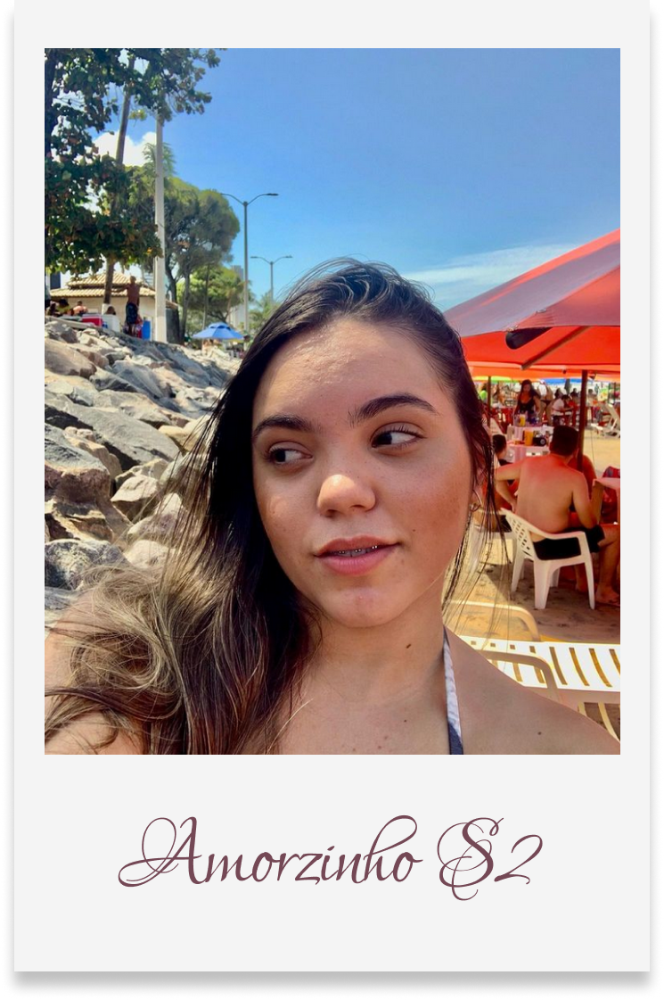

Deus nos agraciou com 1 mês em um relacionamento justo, sério, recheador de amor santo, para a glória de Deus. Você me faz um homem melhor a cada dia. sua bondade,temperança, gentileza, compaixão me fazem olhar mais e mais para a glória do nosso Cristo.
Você me faz ter os melhores Encontros, as melhores risadas, os melhores filmes, as melhores leituras as melhores orações, meu sorriso mais sincero e minhas lágrimas mais sentidas. Eu te amo com todas as minhas forças. Você consegue fazer eu me apaixonar pr ti em todos os dias.
Que possamos trilhar de forma santa até sermos uma só carne. Dependentes do Senhor em tudo. Com Temor e amor a sua palavra.